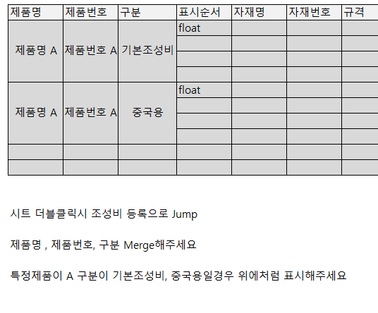
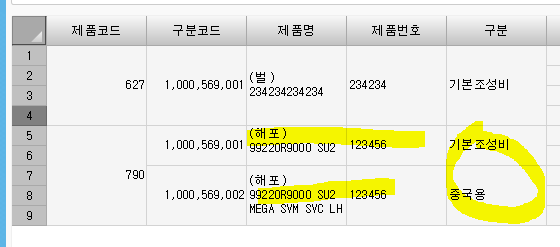
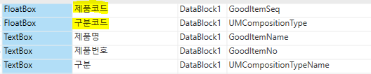

merge (같은 제품이어도 구분값에 따라 나뉘어서 merge)


- 키값을 앞에 두면 자동으로 뒤에부터 나뉘어짐

멀티헤더 및 머지설정으로 해도 안되면
Queyr 메소드 맨 밑에 루아 추가
SS1.MergeColumns = '{GoodItemSeq,1},{UMCompositionType,1},{GoodItemName,1},{GoodItemNo,1},{UMCompositionTypeName,1}'